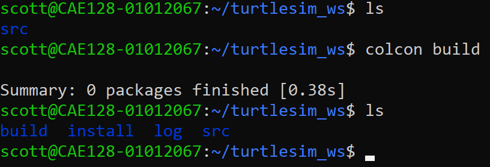

Create turtlesim_ws Workspace¶
The following steps guide you to create a ROS 2 workspace named turtlesim_ws and include the turtlesim package for running a simple simulation.
1️⃣ Set Up the Workspace Directory¶
Open a terminal and create the workspace directory structure:
mkdir -p ~/turtlesim_ws/src
cd ~/turtlesim_ws
2️⃣ Build the Workspace¶
Navigate to the workspace root directory and build the packages:
cd ~/turtlesim_ws
colcon build

Note
What Does colcon build Do?
The colcon build command is used to build all the packages in a ROS 2 workspace. It automates the build process by managing dependencies, generating build artifacts, and installing outputs.
Initialize the Build Process: Colcon identifies the workspace by finding the src/ directory containing ROS 2 packages, then scans the directory to locate all ROS 2 packages (defined by package.xml files).
Dependency Analysis: Colcon examines the dependencies of each package based on its package.xml file and builds a dependency graph. Packages are built in an order that satisfies their dependencies.
Invoke Build Systems: Colcon identifies the build system used by each package (e.g., CMake for C++, setuptools for Python) and builds packages in parallel when there are no dependency conflicts.
Generate Build Artifacts: The build/ directory contains intermediate build files; the install/ directory stores final outputs (executables, libraries, modules); and the log/ directory captures build logs.
Environment Setup: Colcon generates setup files (setup.bash, setup.zsh, local_setup.bash) in the install/ directory to allow workspace packages to be sourced and used.
Post-Build Steps: Colcon validates the build process and provides logs if packages fail to build, skipping dependent packages to prevent cascading failures.
Key Features: Modular builds (each package built independently), incremental builds (only modified packages rebuilt), and build profiles (Debug, Release).
Common Command Options:
--packages-select <package_name>: Build only specified packages.--packages-ignore <package_name>: Skip specific packages during the build.--parallel-workers <N>: Control the number of parallel build jobs.--event-handlers console_cohesion+: Improve the console output format for better readability.
By using colcon build, you automate the process of compiling and installing your ROS 2 packages, ensuring that all dependencies are correctly resolved and that the workspace is ready for use.
3️⃣ Source the Workspace¶
After the build is complete, source the workspace to use the installed packages:
Note
We don’t currently have a package for this workspace yet. We will be creating one shortly.
source ~/turtlesim_ws/install/setup.bash
To make this permanent, add it to your .bashrc:
echo "source ~/turtlesim_ws/install/setup.bash" >> ~/.bashrc
source ~/.bashrc
4️⃣ Understanding ROS 2 Workspaces¶
What is a Workspace?¶
A ROS 2 workspace is a directory structure used to organize and manage ROS 2 packages. It serves as the development environment where you store, build, and work with packages that are part of your ROS 2 project. A workspace includes several directories and components, each with a specific purpose.
5️⃣ Understanding ROS 2 Packages¶
What Is a ROS 2 Package?¶
A ROS 2 package is a modular unit of functionality in ROS 2 that contains everything needed to perform a specific task or provide a feature. Packages are the fundamental building blocks of ROS 2 applications and can include nodes, libraries, configuration files, launch files, and other resources.
Key Components of a ROS 2 Package¶
package.xml: - Metadata file that describes the package (name, version, description, dependencies). - Used by build tools to resolve dependencies.CMakeLists.txt: - Build configuration file for C++ or other compiled packages. - Specifies how the package should be built.setup.py: - Python build script for Python-based packages.Source Code: - Python scripts, C++ source files, or libraries implementing the package functionality. - Typically placed in a directory named after the package.
Resources: - Configuration files, message/service/action definitions, launch files, etc., necessary for the package’s operation.
What Makes a Package Special in ROS 2?¶
Reusability: - Packages are self-contained, making it easy to share and reuse them across different projects.
Dependency Management: - Packages declare their dependencies in
package.xml, allowing tools likecolconto ensure everything needed is installed and built.Interoperability: - ROS 2 packages can communicate with each other using topics, services, and actions, enabling modular system design.
Scalability: - Complex applications can be developed by combining multiple smaller, focused packages.
How a Package Fits Into a Workspace¶
A package resides in the
src/directory of a ROS 2 workspace.It is built and installed into the workspace’s
build/andinstall/directories.After sourcing the workspace, the package’s nodes, launch files, and resources become available for use.
Example Use Case¶
If you are controlling a robot, you might have:
A sensor package to process sensor data.
A control package to compute actions.
A simulation package to visualize the robot’s behavior.
Each package would handle one aspect of the overall application.
In essence, a ROS 2 package is a self-contained module that organizes code, dependencies, and resources for a specific purpose, allowing you to build scalable and modular robotic applications.
Summary¶
You now have a functioning ROS 2 workspace with the turtlesim package installed. In the next section, we’ll create a custom package to control the turtle.